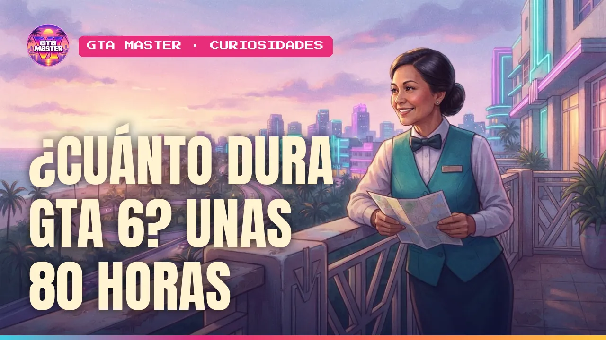

Curiosidades
Curiosidades
¿Cuánto dura GTA 6? Unas 80 horas para un jefe de Rockstar, y el juego no acaba con los créditos

Rob Nelson, de Rockstar North, tardó unas 80 horas en terminar GTA 6. Qué incluía esa partida, cuánto le dedicó PC Gamer y qué se puede hacer después de los créditos.
Despeja la agenda. La cifra más fiable que tenemos sobre la duración de GTA 6 viene del propio estudio: unas 80 horas.
De dónde sale el dato
Lo contó Rob Nelson, codirector de Rockstar North, en una entrevista con el New York Times recogida por GamesRadar+. Jugó el juego completo en febrero y tardó unas 80 horas. Esa partida incluía la historia principal y algunos objetivos opcionales con peso en la trama.
Si te entretienes con las actividades secundarias, la cuenta sube mucho. PC Gamer, por ejemplo, le dedicó 100 horas antes de publicar su reseña, según el resumen de Tom's Guide.
Nelson también pidió no correr. Según GTABoom, quiere que la gente vaya despacio y viva el mundo entre misión y misión, en lugar de ir directa a los créditos.
¿Y después de los créditos?
Se puede seguir. Kotaku ha publicado hoy que se puede seguir jugando cuando acaba la historia, sin destripar cómo, y que Rockstar lo plantea de forma distinta a sus juegos anteriores. El mismo medio cuenta que el mapa tiene zonas que podrían usarse en el futuro.
Strauss Zelnick, consejero delegado de Take-Two, respondió en la última junta con inversores que siempre se puede seguir jugando, según recoge NoPing a partir de GameRant.
| Forma de jugar | Duración orientativa |
|---|---|
| Historia y algunos opcionales (Rob Nelson) | unas 80 h |
| Análisis a fondo (PC Gamer) | 100 h |
| Completarlo todo | muy por encima de 100 h |


Comentarios
Los comentarios funcionan con Disqus: puedes entrar con Google, Facebook, X o tu email. Al pulsar el botón se conecta con Disqus, que usa sus propias cookies. Más información en nuestra política de privacidad.